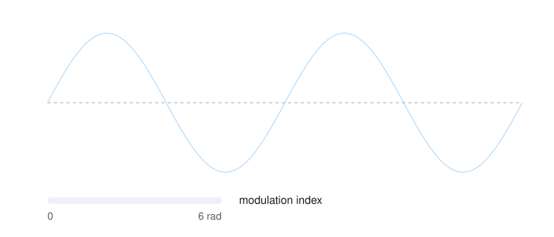
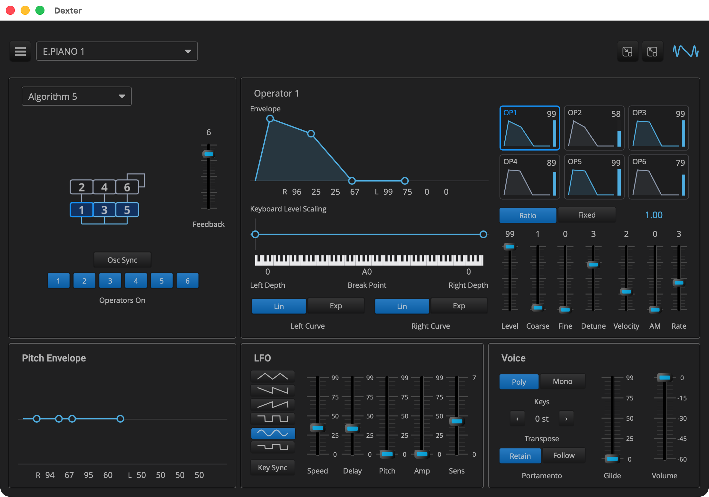

Dexter: Full Featured DX7 Synth
Overview
Dexter is the last tutorial and the largest example: a six operator FM
synth that plays DX7 patches. The sound comes from Q’s FM engine, the
same one Q’s FM Synth tutorial uses, and this page is about
the plugin around it. Every field of a DX7 voice, 145 of them, is a
parameter, so a preset holds a complete DX7 patch. The editor shows all
of them. The algorithm is picked from a menu that draws all 32. To
minimize view clutter, one operator is edited at a time, selected by
clicking one of six thumbnails, and its envelope and keyboard scaling
are curves you drag, with the same Elements curve_editor that Anna IV
uses. The factory presets are the 32 voices of ROM1A, the DX7’s first
cartridge, and dropping a .syx file on the editor adds its voices as
presets.

If Anna is virtual analog, Dexter is virtual digital. Virtual analog emulates an analog synth’s circuits and leaves out their noise and drift. Q’s FM engine does that for a digital instrument. It follows the DX7’s laws, how each parameter value shapes the sound, measured and fitted to the original. It does not copy the DX7’s fixed point arithmetic and lookup tables, or the inherent quantization noise at the start of a note. It computes in floating point, in decibels, seconds and ratios. The patches sound as they did on a DX7, but the engine is free from the DX7’s limitations, such as six operators and 32 algorithms.
| How the DX7’s laws were measured and fitted without a DX7, and where they come from, is in A clean room DX7, in Q’s FM Synthesis reference. |

|
Read Anna V: Presets and the tutorials before it first. Dexter reuses
what they build: the voice pool, the MIDI handling, the curve editors,
the presets and the header. This page covers only what Dexter adds. Read
Q’s FM Synth tutorial too: Dexter uses the same FM engine,
and this page does not explain it again. Each listing’s title links to
the whole file, and all of Dexter’s source is in
|
Quick Start
As in Anna I: The Voice, with dexter in place of anna_1.
On macOS and Linux:
Q=/path/to/q
cp -R "$Q/example/q_plug/dexter" /tmp/dexter
cd /tmp/dexter
cmake -B build -G Ninja -DCMAKE_BUILD_TYPE=Debug -DQ_ROOT="$Q"
cmake --build buildOn Windows, in a command prompt with the MSVC environment loaded:
set Q=C:\path\to\q
xcopy /E /I "%Q%\example\q_plug\dexter" "%TEMP%\dexter"
cd /d "%TEMP%\dexter"
cmake -B build -G Ninja -DCMAKE_BUILD_TYPE=Debug -DQ_ROOT="%Q%"
cmake --build buildThen start the standalone app:
-
macOS:
open "build/products/Dexter.app" -
Linux:
"build/products/Dexter" -
Windows:
"build\products\Standalone-q_plug-dexter_standalone\Dexter.exe"
Pick a preset from the header’s menu and play. BRASS 1 is first in the list; move the mod wheel to add vibrato.
The Parameters
The controller declares the voice’s fields as parameters, in the DX7’s own units, followed by a few of the plugin’s own:
class dexter_controller : public q_plug::controller
{
public:
enum (1)
{
algorithm_id, feedback_id
, pitch_rate_id, pitch_level_id = pitch_rate_id + 4
, lfo_speed_id = pitch_level_id + 4, lfo_delay_id
...
, volume_id, mono_id, porta_mode_id, glide_id (2)
, op_base
};
enum op_field (3)
{
level, fixed, coarse, fine, detune
, rate, env_level = rate + 4
, break_point = env_level + 4, left_depth, right_depth
, left_curve, right_curve
, rate_scaling, amp_mod_sens, velocity_sens
, on (4)
, op_size
};
static constexpr int num_operators = 6;
static constexpr int num_params = op_base + num_operators * op_size;
static constexpr int op_index(int op, int field) (5)
{
return op_base + op * op_size + field;
}
parameter_list parameters() const override;
q::dx_patch patch() const; (6)
...
json state_of(q::dx_patch const& p) const; (7)
...
name_list import_voices(bytes syx, std::string const& file);
};| 1 | The voice-wide parameters come first: the algorithm and feedback, the pitch envelope’s four rates and four levels, and the LFO. |
| 2 | Then the plugin’s own: a volume, because the patches' levels differ by 20 dB or more, and how the keys play: poly or mono, the portamento mode, and the glide time. |
| 3 | The fields of one operator, in the order the DX7’s panel shows them, 22 per operator. |
| 4 | The last one is the operator’s on and off switch, used for auditioning (see below). |
| 5 | Where an operator’s field is in the list: op_index(0, level) is
OP1’s level. |
| 6 | patch() assembles the parameters into a dx_patch for the
patcher. |
| 7 | The reverse: a dx_patch as the state a preset holds. Importing a
cartridge calls it 32 times. |
void add_operator(
std::vector<parameter>& list, std::vector<std::string>& names, int op)
{
auto id = [op](int field)
{
return parameter::id_type(100 * (op + 1) + field); (1)
};
...
list.push_back(parameter{id(f::level), name("Level"), op == 0? 99 : 0}
.range(0, 99).module(module)); (2)
list.push_back(parameter{id(f::fixed), name("Mode"), 0, modes} (3)
.module(module));
...
list.push_back(parameter{id(f::detune), name("Detune"), 0}
.range(-7, 7).module(module)); (4)
...
list.push_back(parameter{id(f::on), name("On"), true}
.dont_save().live().module(module)); (5)
}
...
list.push_back(parameter{1, "Algorithm", 1}.range(1, 32)); (6)
list.push_back(parameter{2, "Feedback", 0}.range(0, 7));
...
list.push_back(parameter{20, "Volume", 0_dB}.range(-60.0, 0.0).live()); (7)| 1 | Operator n’s parameter ids start at 100 n, so an id shows which operator a parameter belongs to, in a host’s list and in a preset file. |
| 2 | Values are in the DX7’s units: a level is 0 to 99. The defaults are the DX7’s INIT VOICE, where only OP1 sounds. Each operator’s parameters are in a module named after it, which hosts use to group them. |
| 3 | A choice is an enum_ parameter, which the host shows by name:
Ratio or Fixed, the four scaling curves, the six LFO waves. |
| 4 | Detune is -7 to 7, as the panel shows it; the patch stores it as the DX7’s 0 to 14. |
| 5 | The switch is saved with the session but not in presets, so loading
a preset turns every operator back on. It is also live: the processor
reads it directly instead of compiling it into the patch (see below). |
| 6 | The voice’s own parameters have the ids 1 to 19. |
| 7 | The plugin’s own have the ids 20 to 23, and are all live. |
|
In depth: parameter, for |
The Processor
The processor works like Anna’s: a pool of 16 voices, played from
MIDI. The voices are Q’s fm_voice, and they play a patch that a
dx_patcher compiles from the parameters. The patch is compiled again
whenever a voice parameter changes, and the notes already sounding
switch to it, as they do on a DX7.
void dexter_processor::parameters_changed()
{
_patcher.emplace(_ctl.patch(), float(sps())); (1)
for (auto& v : _voices)
{
if (v.fm.active())
v.fm.update(*_patcher, v.key, v.velocity); (2)
}
}
void dexter_processor::process(in_channels const& /*in*/
, out_channels const& out)
{
q::fm_routing::mask enabled = 0;
for (int op = 0; op != dexter_controller::num_operators; ++op)
{
if (_ctl.enabled(op))
enabled |= 1u << op;
}
for (auto& v : _voices)
{
v.fm.enable(enabled); (3)
v.fm.mod_wheel(_wheel);
}
...
void dexter_processor::note_on(std::uint8_t key, float velocity)
{
...
auto& v = _ctl.mono()? _voices.front() : allocate();
v.fm.set(_patcher->voice, float(sps())); (4)
v.fm.attack(*_patcher, key, velocity);| 1 | A new dx_patcher is built in place, one for all the voices. Moving
the volume, the glide or a switch does not lead here, because those
parameters are live. |
| 2 | Each sounding note gets the new patch for its key and velocity, without restarting. An edit is heard on a held note, and choosing a preset while notes ring changes them instead of cutting them off, as on a DX7. A note held by a release level above zero, like the rumble of the DX7’s TRAIN patch, fades out if the new patch’s release level is lower. |
| 3 | The operator switches and the mod wheel also apply to notes already sounding, so switching an operator off silences it at once, which is what auditioning needs. |
| 4 | A new note starts the patch from the beginning: its envelopes and its pitch envelope from their first stage. |
The Editor
The editor has five panels under the standard header. To minimize view clutter, one operator is edited at a time. Its envelope, its keyboard scaling and its sliders are pages in three decks, a page per operator, all bound to their parameters when the editor opens. Clicking an operator’s thumbnail shows its pages.
element_ptr dexter_presenter::make_operator()
{
_envelopes = share(deck_composite{}); (1)
_scalings = share(deck_composite{});
_sliders = share(deck_composite{});
for (int op = 0; op != f::num_operators; ++op)
{
_envelopes->push_back(make_envelope_page(op));
_scalings->push_back(make_scaling_page(op));
_sliders->push_back(make_slider_page(op));
}
...
row->push_back(share(margin({3, 3, 3, 3}
, hold(make_thumb(r * 3 + c))))); (2)
...
void dexter_presenter::select(int op)
{
_selected = op;
_envelopes->select(op); (3)
_scalings->select(op);
_sliders->select(op);
for (int i = 0; i != int(_thumbs.size()); ++i)
_thumbs[i]->value(i == op); (4)
_title->set_text("Operator " + std::to_string(op + 1));
if (auto v = view())
v->refresh();
}| 1 | A deck shows one page at a time. Each deck has six pages, one per operator. |
| 2 | A thumbnail for each operator, described below. |
| 3 | Selecting an operator shows its page in each deck. |
| 4 | The thumbnails are latching buttons, and only the selected one is on. |
A thumbnail is built from stock Elements parts bound to the operator’s parameters, with no drawing code of its own:
auto env = envelope::make_thumb(); (1)
link_envelope(env, at(f::rate), at(f::env_level));
...
auto bar = share(progress_bar( (2)
box(palette::line), box(palette::background)));
...
auto off = share(hidable(rbox(palette::background.opacity(0.6), 4))); (3)
...
auto look = [op](bool selected) (4)
{
...
return layer(
margin({6, 3, 6, 3}, align_left_top(
label("OP" + std::to_string(op + 1))
.relative_font_size(0.8)
.font_color(c)))
, frame{selected? palette::selected : palette::grid
, selected? 2.0f : 1.0f, 4.0f}
, rbox(rgba(31, 31, 33, 255), 4.0f)
);
};
env->fit_width = true; (5)
auto b = share(latching_button(layer(
hold(off),
...
button_face(look(false), look(true)) (6)
)));
b->on_click = [this, op](bool) { select(op); };| 1 | A small copy of the envelope editor, with no handles and no points to drag, bound to the same parameters as the full size one. |
| 2 | The operator’s level, as a progress bar bound to the parameter. |
| 3 | A shade over the thumbnail, shown while the operator is switched off. |
| 4 | The thumbnail’s background: a dark box with an edge and the operator’s name, drawn in the selection color when the operator is selected. |
| 5 | The envelope is stretched to the thumbnail’s width, however long it is. |
| 6 | Elements' button_face draws the first look while the button is off
and the second while it is on. |
All 32 algorithms are in one picture, eight columns by four rows, drawn in the style of the DX7’s panel. The algorithm menu shows the whole picture, and the panel shows the cell for the current algorithm, with the selected operator framed and the switched-off operators shaded:
element_ptr dexter_presenter::make_algorithm_menu()
{
...
highlight.label = [](int i) { return std::to_string(i + 1); }; (1)
auto grid = share(image_grid_menu(_algorithms, 8, 4, 0.25f, highlight)); (2)
grid->value(_ctl.get_parameter<int>(f::algorithm_id) - 1);
grid->on_change = [this](int i)
{
_ctl.begin_edit(f::algorithm_id);
_ctl.edit_parameter(f::algorithm_id, double(i + 1));
_ctl.end_edit(f::algorithm_id);
};
...
element_ptr dexter_presenter::make_algorithm()
{
image_regions::regions_type boxes(32);
for (int a = 0; a != 32; ++a)
{
for (auto const& b : algorithm_boxes[a]) (3)
boxes[a].push_back({b[0], b[1], b[2], b[3]});
}
image_regions regions{std::move(boxes), [this](int, int op) (4)
{
if (op == _selected)
return image_regions::lit;
if (!_ctl.enabled(op))
return image_regions::dimmed;
return image_regions::normal;
}};
...
auto chart =
share(image_grid_cell(_algorithms, 8, 4, std::move(regions))); (5)
view()->bindings().attach(_ctl.model(f::algorithm_id), chart
, [](auto& c, double v) { c.value(int(std::lround(v)) - 1); });
...
auto name = share(label("")); (6)
view()->bindings().attach(_ctl.model(f::algorithm_id), name
, [](auto& l, double v)
{
l.set_text("Algorithm " + std::to_string(std::lround(v)));
});
auto pick = make_selection_menu_button(name);
pick.position(menu_position::bottom_right);
pick.on_open_menu = [this](basic_button_menu& b)
{
b.menu(hold(make_algorithm_menu()));
};| 1 | The menu’s styler labels each cell with its number. The picture itself has no numbers, so the chart on the panel shows none. |
| 2 | Elements' image_grid_menu takes the image, its columns and rows,
and a scale: 0.25, because the picture has four pixels per point.
Clicking a cell selects it and closes the menu. |
| 3 | Where each operator’s box is in its cell, from a table generated along with the picture. |
| 4 | image_regions draws over each box according to its state: lit for
the selected operator, dimmed for the switched-off ones. |
| 5 | image_grid_cell shows one cell of the same image, for the current
algorithm, scaled to fit the panel. |
| 6 | The panel’s title is the menu’s button, and a binding keeps its text in step with the parameter. The menu is built when it opens, so it marks the current algorithm. |
gen_images.py
generates the picture and the table. It lays out the charts the same way
as the chart in Q’s reference, from Q’s dx7_routing table, so the
picture always matches what the engine plays. It also generates the
editor’s other pictures: the keys under the scaling editor, the six LFO
waves, and the logo the header shows. Run it again only to change how
they look.
The LFO’s wave buttons are stock latching buttons. Each shows one row of the waves picture on a standard button body:
auto wave = image_grid_cell(_waves, 1, 6, element{}); (1)
wave.value(k);
auto b = share(latching_button(layer(
margin({10, 4, 10, 4}, std::move(wave))
, button_body{palette::button_on} (2)
)));
bind(f::lfo_wave_id, b, choice_of{k});| 1 | One of the picture’s six rows, with nothing drawn over it. |
| 2 | Elements' button_body draws a button’s body, lit while the button
is on, under any content. |
Everything else on the panel, the chart included, is bound to its parameters. The one exception is the chart’s shading of switched-off operators, which is worked out when the chart is drawn, so the chart is redrawn when a switch changes:
void dexter_presenter::watch()
{
for (int op = 0; op != f::num_operators; ++op)
{
view()->bindings().observe(_ctl.model(f::op_index(op, f::on)) (1)
, [this](auto)
{
if (auto v = view())
v->refresh(*_chart);
});
}
}| 1 | One observer per switch, registered through the view’s bindings, so they are removed when the view closes. |
|
In depth: presenter, for |
The Envelopes
A DX7 envelope has four rates and four levels. Dexter draws it with a
curve_editor, as Anna IV: Drawn Envelopes does, using six points: the start
and the end at L4, corners at L1, L2 and L3, and the end of the hold at
L3, where the envelope stays while the key is down. A corner’s height is
its level, and its offset from the previous point is its rate: the
faster the rate, the shorter the segment.
std::vector<curve_point> points()
{
return {
{{0.0f, 0.0f}}
, {{width(0.9f), 1.0f}, true} (1)
, {{width(0.5f), 0.75f}, true}
, {{width(0.5f), 0.0f}, true}
, {{hold_width, 0.0f}, true}
, {{width(0.6f), 0.0f}, true}
};
}
point constrain(points_type const& pts, std::size_t i, point to)
{
to = in_unit_square(to);
if (i > 0)
{
auto const lo = pts[i - 1].x + min_width; (2)
to.x = std::clamp(to.x, lo, lo + stage_width);
}
return to;
}
bool movable(std::size_t i)
{
return i != start_point && i != hold_point; (3)
}
double rate_width::position(double v) const (4)
{
return width(param->position(v));
}
double rate_width::value(double pos) const
{
return param->value(1.0 - (pos - min_width) / stage_width);
}| 1 | As in Anna IV: Drawn Envelopes, the true sets offset_x: every point after
the start holds its x as an offset from the x of the point before it, so
dragging a corner moves the rest of the envelope with it. These are only
starting values; the bindings set them from the parameters. |
| 2 | A segment is between min_width and min_width + stage_width wide,
so all four fit even at their slowest rates. |
| 3 | The start and the end of the hold cannot be dragged; they follow L4 and L3. |
| 4 | A mapping for the binder between a rate parameter and its segment’s width: the fastest rate, 99, gives the shortest segment. |
void dexter_presenter::link_envelope(
std::shared_ptr<basic_curve_editor> e, int rate, int level)
{
auto const& params = _ctl.parameters();
for (int i = 0; i != 4; ++i)
{
auto const c = envelope::corner[i];
bind(rate + i, x_of(e, c), envelope::rate_width{¶ms[rate + i]}); (1)
link(level + i, y_of(e, c));
}
link(level + 3, y_of(e, envelope::start_point)); (2)
link(level + 2, y_of(e, envelope::hold_point));
}| 1 | Eight bindings: each corner’s offset to its rate, through
rate_width, and its height to its level, through the parameter’s own
mapping. |
| 2 | The two points that follow a level are bound to that level’s parameter too. The pitch envelope uses the same editor, with a guide line at the middle, where level 50 leaves the pitch unchanged. |
Keyboard level scaling uses a second editor, above a picture of the keys. The break point sits on the middle line and is dragged along the keys. The point at each end sets that side’s depth: drag it up for a boost or down for a cut. Buttons choose each side’s shape, linear or exponential. The editor’s lines draw the actual curves, bent where a side is exponential:
curve_lines lines{palette::line, palette::fill.opacity(0)};
lines.floor_color = palette::grid;
lines.horizontal_guides = {0.5f}; (1)
lines.vertical_guides = {break_point};
lines.shape = [exp, curve](std::size_t segment, float t) (2)
{
if (!exp(int(segment)))
return t;
return segment == 0? 1.0f - curve(1.0f - t) : curve(t);
};| 1 | Guide lines in the floor’s color: the middle line, which means no scaling, and a vertical line through the break point. |
| 2 | The shape of a segment: for a point t of the way along it, how far
it has risen, from 0 to 1. A linear side is a straight line. An
exponential side follows the DX7’s curve, reversed on the left, since
that segment ends at the break point. |
The end points' heights and the curves' directions are bound like this:
scaling::depth_at const depth{¶ms[at(side.depth)], &_ctl
, at(side.curve)};
bind(at(side.depth), y_of(s, side.point), depth); (1)
...
s->on_change = [this, sides, at](std::size_t i, point pos) (2)
{
...
auto const now = scaling_curve::of(
pos.y >= 0.5f, scaling_curve::is_exp(c));
if (now != c)
{
_ctl.begin_edit(index);
_ctl.edit_parameter(index, now);
_ctl.end_edit(index);
}| 1 | An end point’s height is its depth, mapped above or below the middle according to the direction in the curve parameter. |
| 2 | on_change reports which point moved and where. Dragging an end
across the middle switches its curve between a cut and a boost, keeping
its shape. |
|
In depth: Anna IV: Drawn Envelopes, for the |
Cartridges
The factory presets are the 32 voices of ROM1A, the DX7’s first
cartridge, stored in factory_presets.json as Anna V: Presets
describes. Dropping a DX7 .syx file on the editor, either a cartridge
of 32 voices or a single voice, adds its voices as user presets named
after them, and loads the first one:
auto drop = share(drop_box( (1)
fixed_size({1100, 740},
...
), {"text/uri-list"}));
drop->on_drop = [this](drop_info const& info) { return import(info); };
view_.content(hold(drop), box(palette::background));
...
bool dexter_presenter::import(drop_info const& info)
{
...
for (auto const& path : get_filepaths(info.data)) (2)
{
std::ifstream in(path, std::ios::binary);
std::vector<std::uint8_t> syx{std::istreambuf_iterator<char>(in), {}};
auto const file = path.filename().string();
auto const names = _ctl.import_voices(syx, path.stem().string()); (3)
...
if (!first.empty())
{
_ctl.load_preset(first); (4)
v->refresh();
}
open_popup(message_box1(*v, report, icons::attention, []() {}), *v); (5)| 1 | Elements' drop_box around the whole editor accepts dropped files,
as paths. |
| 2 | Each file is read in one go; DX7 dumps are small. |
| 3 | The controller converts the bytes to presets. The file’s name is used to rename a voice whose name is already taken. |
| 4 | The first imported voice is loaded. |
| 5 | A message box reports how many voices each file held, or that a file was not a DX7 dump. |
dexter_controller::name_list
dexter_controller::import_voices(bytes syx, std::string const& file)
{
std::vector<q::dx_patch> voices;
if (auto bank = q::dx_cartridge(syx)) (1)
voices.assign(bank->begin(), bank->end());
else if (auto voice = q::dx_voice(syx))
voices.push_back(*voice);
else
return {};
...
for (auto const& v : voices)
{
auto name = tidy(v.name); (2)
if (taken(name))
name += " (" + file + ")";
...
states.emplace_back(name, state_of(v)); (3)
}
add_presets(states); (4)
return names;
}| 1 | Q decodes the dumps: dx_cartridge reads a bulk dump of 32 voices
and dx_voice a single voice, both into dx_patch. See DX System Exclusive. |
| 2 | A DX7 name is ten characters padded with spaces, which tidy trims. |
| 3 | Each voice becomes the state a preset holds, with the plugin’s own parameters at their defaults. |
| 4 | All the voices are added with a single write of the user’s preset file. |
|
In depth: Presets, in
controller, for |
The Build
The envelope and scaling editors are set up in source files of their own, which the implementation library lists:
add_library(q_plug_dexter_impl STATIC
dexter.cpp
dexter_processor.cpp
dexter_controller.cpp
dexter_presenter.cpp
envelope_control.cpp (1)
scaling_control.cpp
)| 1 | Their points, constraints and line stylers. |
q_plug_add_resources(q_plug-dexter
"${CMAKE_CURRENT_SOURCE_DIR}/factory_presets.json"
"${CMAKE_CURRENT_SOURCE_DIR}/resources/algorithms.png" (1)
"${CMAKE_CURRENT_SOURCE_DIR}/resources/keys.png"
"${CMAKE_CURRENT_SOURCE_DIR}/resources/waves.png"
"${CMAKE_CURRENT_SOURCE_DIR}/resources/logo.png")| 1 | The factory presets, as in Anna V, and the editor’s pictures, which the editor loads by name. |
In dexter.cpp, the id is com.qplug.dexter, the name is Dexter and the
view size is 1100 by 740. The AudioUnit subtype is QDxt.
Components Used
| Component | Role |
|---|---|
Compiles the parameters into what the voices play |
|
Reads the cartridges dropped on the editor |
|
One voice of the pool, with its operator switches and mod wheel |
|
145 fields of a voice, as the DX7 shows them |
|
A voice as a preset, |
|
|
|
Notes, the sustain pedal, the mod wheel and the bend |
|
|
|
The preset menu, with ROM1A in it |
|
|
The envelopes and the keyboard scaling |
|
The algorithms, from one picture |
|
The selected and switched-off operators, over the chart |
|
The scaling curves, bent by a shape, and the guides |
|
The keys, stretched with |
|
The LFO’s wave buttons and the operator thumbnails |
|
An operator’s level, in its thumbnail |
|
One operator’s pages at a time |
|
Cartridges dropped on the editor |
Previous: Anna V: Presets